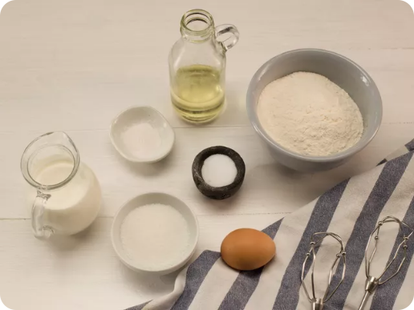
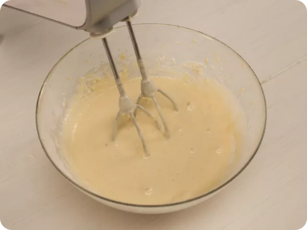
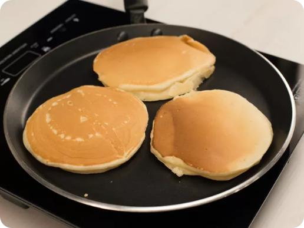

9.5K
Панкейки
Один из самых популярных американских завтраков выглядит именно так. Пышные и чуточку пористые панкейки — это нечто среднее между оладьями и блинами. В них добавляют масло, которое делает панкейки особенно нежными. А обжаривают их на сухой сковороде. В Америке к панкейкам подают кленовый сироп, но его вполне можно заменить цветочным мёдом или любимым джемом.
Ингредиенты
Пшеничная мука
200 г
Сахар
40 г
Куриное яйцо
1 шт
Молоко
200 мл = 200 г
Соль
1 г
Оливковое масло
50 мл = 50 г
Разрыхлитель теста
5 г
Рецепт
Шаг 1.
Подготовьте все продукты, миксер и сковороду для блинов.

Шаг 2.
Соедините все сухие ингредиенты, добавьте яйцо и перемешайте с помощью миксера. Добавьте молоко и масло и снова перемешайте миксером.

Шаг 3.
Разогрейте сковороду и обжаривайте панкейки на среднем огне без масла.

Комментарии
(115)

4.5
Мария
Очень вкусно получилось. Рекомендую.
20.02.2025
Лера
Оливковое я заменила подсолнечным, я хотела приготовить панкейки а не мини блины.
10.03.2025
Марк
Очень вкусные!!!
18.10.2025
Мария
Очень вкусно получилось. Рекомендую.
20.02.2025
Лера
Оливковое я заменила подсолнечным, я хотела приготовить панкейки а не мини блины.
10.03.2025
Марк
Очень вкусные!!!
18.10.2025
Напишите ваш отзыв
4.5(115)